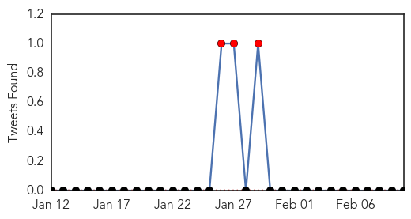

Unknown
30-Day Web Trend
0 alerts, 0 warnings

30-Day Twitter Trend
2 alerts, 0 warnings

Article Locations

Article Confidences

Top Articles:
- 0.917
- Chicago Tribune
- 0.917
- Chicago Tribune
- 0.917
- Chicago Tribune
- 0.917
- Chicago Tribune
- 0.917
- Chicago Tribune
- 0.917
- Chicago Tribune
- 0.917
- Chicago Tribune
- 0.917
- Chicago Tribune
- 0.917
- Chicago Tribune
- 0.915
- Melbourne man contracts rare and potentially fatal Japanese encephalitis virus in Bali
- 0.910
- The world windows to Thailand
- 0.866
- Pentagon chief offers condolences after U.S. hostage's death
- 0.866
- Ukrainian forces launch offensive near Mariupol, east Ukraine
- 0.866
- Western moves aimed at destabilising situation in Ukraine
- 0.866
- Over 600 Russian troops start exercises in Crimea
- 0.866
- Ukraine's Poroshenko asks parliament to agree to dismiss General Prosecutor
- 0.866
- Polish defence minister says supplying arms to Ukraine is last option
- 0.833
- Melbourne man struck down with deadly Japanese encephalitis following trip to Bali
- 0.828
- Diarrhoea breaks out in Kurigram, number of child patients on rise
- 0.821
- Bali brain bug prompts health warning
- 0.819
- West Texas News
- 0.742
- CNY Health experts to warn of significant spike in Syphilis cases
- 0.727
- PED in Ontario a year later
- 0.703
- Ghana, Business Advice, Jobs, News, Business Directory, Real Estate, Finance, Forms, Auto
- 0.676
- Little Cherry Virus checks reveal extent of disease
- 0.659
- New foot-and-mouth case
- 0.629
- Govt orders probe into death of children in Sylhet hospital
- 0.614
- Observer
- 0.601
- Uganda crippled by medical brain drain
- 0.572
- Mission to spread biosecurity message
- 0.551
- Obama confirms death of US hostage Kayla Mueller
- 0.551
- Russia to help build Egypt’s first nuclear power plant
- 0.551
- NYC officer indicted for fatal shooting of unarmed black man
- 0.551
- French baby-swap families win €1.9m in damages
- 0.551
- Assad: Syria ‘informed’ about US-led strikes on IS group
- 0.550
- After fluoride, how lithium could be put in tap water to beat depression
- 0.547
- WCAX.COM Local Vermont News, Weather and Sports-
- 0.538
- U.Va. med center restores regular visitation as flu declines
- 0.536
- H5N6 avian flu fatality in ...｜Society｜WCT
- 0.520
- Wet Season Brings Spike In Malaria
- 0.510
- Travellers' antibiotics may do more harm than good
- 0.506
- Covenant finishes pilot study on remote monitoring
Top Tweets:
- 0.649
- Hong Kong flu epidemic expected to worsen http://t.co/xhOW9Vjyu2 via flu
- 0.611
- RT: Ppl w/diabetes are at risk of flu complications. If you have flu-like symptoms, contact your doc right away h…
Measles
30-Day Web Trend
22 alerts, 3 warnings

30-Day Twitter Trend
5 alerts, 0 warnings

Article Locations

Article Confidences

Top Articles:
- 0.995
- Latest Measles Count: 121 Cases in 17 States, D.C.
- 0.995
- Latest Measles Count: 121 Cases in 17 States and D.C.
- 0.992
- Vaccine controversy: Daycare promising 'vaccine-free environment' irks Ottawa Public Health
- 0.990
- Three more measles cases confirmed in Cook County
- 0.989
- New Case In Georgia, But Surrounding States Say They Are Prepared
- 0.988
- No measles cases reported in BHC area
- 0.986
- What’s in a measles vaccine? 4 things you need to know
- 0.985
- A few questions about measles
- 0.980
- Health Officials had confirmed first measles case in Georgia since it was last reported in 2012.
- 0.980
- California Warns Parents Against Intentionally Exposing Children With 'Measles Parties'
- 0.980
- Albany health officials watching measles outbreak, speak on the disease
- 0.979
- Check it out: Area health briefs
- 0.976
- The measles outbreak is growing in California
- 0.974
- The Belleville Intelligencer
- 0.973
- Why Measles Parties Are a Bad idea
- 0.973
- California warns against intentional measles exposures
- 0.973
- Georgia reports 1st measles case in 3 years, considered an imported case
- 0.967
- UPDATE 1-California warns against intentional measles exposures
- 0.966
- California warns against intentional measles exposures
- 0.966
- Alexander Says Vaccines Save Lives
- 0.966
- Alexander Says Vaccines Save Lives
- 0.966
- California warns against intentional measles exposures
- 0.965
- Calif. health officials warn parents on measles exposure
- 0.963
- Possible measles case under investigation in Fairfax County
- 0.963
- Measles and the Risks of Skipping Vaccines
- 0.962
- Vaccinations are a responsibility
- 0.958
- California warns against intentional measles exposures
- 0.956
- 4 confirmed measles cases in Pasadena
- 0.956
- FDA chief calls measles outbreak 'disturbing'
- 0.955
- Councilman Mike Fagan questions need for vaccines
- 0.955
- No sign of measles in Oxford County
- 0.955
- Georgia Infant Diagnosed With Disease
- 0.952
- Officials believe child in Manitoba with measles is an isolated case
- 0.951
- Illinois KinderCare Now Has 6 Infants, 1 Adult With Measles
- 0.950
- Meade School District educating parents on measles
- 0.949
- Is measles' return the 'New normal'?
- 0.948
- Is Measles' Return the 'New Normal'?
- 0.947
- Measles is expected topic for surgeon general visit
- 0.946
- Two more measles cases from Palatine day care center
- 0.945
- Measles outbreak spreads to 3 more states and D.C.
- 0.945
- Measles Outbreak Spreads In Chicago, Toronto; Not Related To Disneyland
- 0.941
- KFVS12 News & Weather Cape Girardeau, Carbondale, Poplar Bluff
- 0.936
- County Public Health Propagates Big Pharma Quackery and CDC Scientific Fraud
- 0.933
- New measles case confirmed in Cook County
- 0.932
- U.S. FDA Commissioner says measles outbreak 'alarming'
- 0.930
- Measles Outbreak
- 0.926
- Our view: Don't wait; vaccinate
- 0.924
- Measles seen in 18 states and D.C.
- 0.920
- Chicago measles case among 10 confirmed in Illinois
- 0.907
- More Texas Parents Say 'No' to Measles Vaccine Despite Nationwide Outbreak
Showing top 50 articles...
Top Tweets:
-
No tweets found for Feb 10, 2015